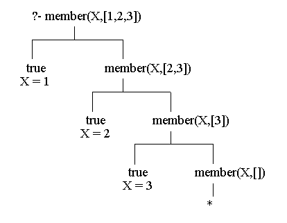

meaning ...car([X|Y],X). cdr([X|Y],Y). cons(X,R,[X|R]).
However, we will see that these explicit definitions are unneeded. A list whose head is X and whose tail is Y can just be referred to using the Prolog term [X|Y]. Conversely, if the list can be unified with the Prolog term '[X|Y]' then the first element of the list is bound to (unified with) X and the tail of the list is bound to Y.
- The head (car) of [X|Y] is X.
- The tail (cdr) of [X|Y] is Y.
- Putting X at the head and Y as the tail constructs (cons) the list [X|R].
Many of the predicates discussed in this section are "built-in" for many Prolog interpreters.
Consider the following definition of the predicate 'member/2'.
One can read the clauses the following way, respectively:member(X,[X|R]). member(X,[Y|R]) :- member(X,R).
This program can be used in numerous ways. One can test membership:
- X is a member of a list whose first element is X.
- X is a member of a list whose tail is R if X is a member of R.
One can generate members of a list:?- member(2,[1,2,3]). Yes
Here is a derivation tree showing how this last goal generated all of the answers.?- member(X,[1,2,3]). X = 1 ; X = 2 ; X = 3 ; No

Fig. 2.7
Each left branch corresponds to a match (unification) against the first clause for 'member' and each right branch corresponds to a match against the second clause. The subgoal 'member(X,[])' on the lowest right branch will not match the head of any 'member' clause. In particular '[]' will not unify with a pattern of the form '[X|R]' because the latter represents a list with at least one element.
We will find many other uses for 'member'. This example query ...
... suggests a use where one intends to search in order to find elements paired with a specified element. Here is another, finding elements of a list which satisfy some constraint:?- member([3,Y], [[1,a],[2,m],[3,z],[4,v],[3,p]]). Y = z ; Y = p ; No
The definition for 'member' is usually written?- member(X,[23,45,67,12,222,19,9,6]), Y is X*X, Y < 100. X = 9 Y = 81 ; X = 6 Y = 36 ; No
where '_' (underscore) designates a "don't-care" variable, usually called anonymous variables. In general, such variables have names whose first character is the underscore. In effect, they match any Prolog term, but no variable binding results from the free match. Notice that this is consistent with the original intentions of the definition of 'member'. Not having to bind values to anonymous variables saves a little run-space and run-time.member(X,[X|_]). member(X,[_|R]) :- member(X,R).
Related to 'member' is the following definition for 'takeout'.
These clauses can be paraphrased in English as follows:takeout(X,[X|R],R). takeout(X,[F|R],[F|S]) :- takeout(X,R,S).
For example,
- When X is taken out of [X|R], R results.
- When X is taken out of the tail of [X|R], [X|S] results, where S is the result of taking X out of R.
Notice that it would not be appropriate to use any anonymous variables in the definition of 'takeout'. Here is a program clause tree showing that 'takeout(3,[1,2,3],[1,2])' is a consequence of the definition. Pay particular attention to exactly how the clauses are used to construct the tree.?- takeout(X,[1,2,3],L). X=1 L=[2,3] ; X=2 L=[1,3] ; X=3 L=[1,2] ; No
takeout(3,[1,2,3],[1,2]) | | takeout(3,[2,3],[2]) | | takeout(3,[3],[]) | | true
shows that 'takeout(X,Z,W)' can also be interpreted as "insert X into W to produce Z". That is, 'takeout' got its name from just one of its uses. Of course, one could define?- takeout(3,W,[a,b,c]). W = [3,a,b,c] ; W = [a,3,b,c] ; W = [a,b,3,c] ; W = [a,b,c,3] ; No
Here is a definition for appending, or concatenating, two Prolog lists.putin(X,L,R) :- takeout(X,R,L).
Several kinds of goals are possible:append([X|Y],Z,[X|W]) :- append(Y,Z,W). append([],X,X).
Exercise 2.7.1 Consider the following alternate definition for member:?- append([1,2,3],[4,5],[1,2,3,4,5]). Yes ?- append([1,2,3],[4,5],A). A = [1,2,3,4,5] ?- append([1,2,3],W,[1,2,3,4,5]). W = [4,5] ... and so on.
(a) Show that this program would have exactly the same consequences as the original version. (b) Explain, however, how and why this version could produce different Prolog goal behavior.member(X,[_|R) :- member(X,R). member(X,[X|_]).
Exercise 2.7.2 Draw a Prolog derivation tree for the goal '?- append([1,2],[a,b,c],A)' . Explain how it is that the first value '[1,2]' is copied in order to compute the result A.
Reversing a list can be done with
This program illustrates Prolog's approach to an important strategy -- using an accumulating parameter (the middle variable) -- to accumulate a list answer until the computation is finished. For example, consider the following (partial) derivation treereverse([X|Y],Z,W) :- reverse(Y,[X|Z],W). reverse([],X,X).
?- reverse([1,2,3],[],A) | | reverse([2,3],[1],A) | | reverse([3],[2,1],A) | | reverse([],[3,2,1],A) | | true A = [3,2,1]
Exercise 2.7.3 Write a two-parameter version of 'reverse' that does not use the accumulating parameter idea. Use 'append' instead, for example, where one rule would be paraphrased like this ...reverse(A,R) :- reverse(A,[],R).
reverse list [X|R] by reversing R to get T, then append T to [X]What about the efficiency of this version? Compare it to the given 'reverse' above.
Here is an interesting definition designed to produce all possible permutations of a list.
Think of 'takeout(X,Z,W)' as being used in the "X put into W yields Z" sense here. Then the definitions could paraphrased as follows:perm([X|Y],Z) :- perm(Y,W), takeout(X,Z,W). perm([],[]).
Here is a sample goal for 'perm':
- Z is a permutation of [X|Y] provided W is a permutation of Y and then X is put into W to produce Z .
- [] is the (only) permutation of [].
The user should try the goal '?- perm(P,[1,2,3]).'?- perm([1,2,3],P). P = [1,2,3] ; P = [2,1,3] ; P = [2,3,1] ; P = [1,3,2] ; P = [3,1,2] ; P = [3,2,1] ; No
Exercise 2.7.4 Construct a program clause tree having all true leaves for 'perm([a,b,c],[c,b,a])'.
It is common to represent sets as Prolog lists. This representation has some flaws, such as the fact that Prolog lists are inherently ordered (sets are not), and a list can have multiple occurrences of a particular element (sets do not). However, the list representation is very convenient. Set membership can be computed using the 'member' relation for lists previously discussed. Subsets can be tested using
Goals likesubset([X|R],S) :- member(X,S), subset(R,S). subset([],_).
work fine. Why would '?- subset([1,2],W)' and '?- subset(A,[1,2,3])' not be reasonable goals??- subset([4,3],[2,3,5,4]). Yes
Union and intersection can be approximated using the following Prolog list versions:
These are intended to be used for goals where the first two variables already have a list value. Sometimes this intention is indicated by writing something like 'union(+,+,-)' to indicate the intended variable profile. For example,union([X|Y],Z,W) :- member(X,Z), union(Y,Z,W). union([X|Y],Z,[X|W]) :- \+ member(X,Z), union(Y,Z,W). union([],Z,Z). intersection([X|Y],M,[X|Z]) :- member(X,M), intersection(Y,M,Z). intersection([X|Y],M,Z) :- \+ member(X,M), intersection(Y,M,Z). intersection([],M,[]).
Why would goals like '?- union(X,[2,3],[1,3,a,2])' cause difficulty??- union([1,2,3,4],[1,a,b,4],A). A = [2,3,1,a,b,4] ?- intersection([1,2,3,4],[1,a,b,4],B). B = [1,4]
Some run-time inefficiency results from having to rematch the heads of clauses for both of the definitions. Here is an alternate version of union, using ! instead:
Exercise 2.7.5 Design and test 'delete(X,L,R)' which is intended to delete all occurrences of X from list L to produce result R.union([X|Y],Z,W) :- member(X,Z), !, /* do not use next clauses */ union(Y,Z,W). union([X|Y],Z,[X|W]) :- union(Y,Z,W). union([],Z,Z).
Exercise 2.7.6 Design and test 'prune(A,B)' which is intended to remove multiple occurrences of elements from A to produce result B. For example,
Try to make it so that B has remaining elements in the order that they occurred in A.?- prune([a,1,b,2,a,3,a,4,b],B). B = [a,1,b,2,3,4]
Exercise 2.7.7 Design and test 'prefix(A,B)' which tests to see if A is a list prefix of B, and which can generate prefixes of a given list. For example,
Draw a program clause tree showing that 'prefix([1,2],[1,2,3])' is a consequence of your program.?- prefix([1,2,3],[1,2,3,4,5]). yes ?- prefix([1,2],[1,a,2,3]). No ?- prefix(W,[1,2,3]). W = [] ; W = [1] ; W = [1,2] ; W = [1,2,3] ; No
Exercise 2.7.8 Design a Prolog predicate 'segment', that tests whether its first list argument is a contiguous segment contained anywhere within the second list argument. For example,
Draw a clause tree showing that 'segment([a,b,c],[1,c,a,b,c,3])' is a consequence of your program.?- segment([a,b,c],[1,c,a,b,c,3]). Yes ?- segment([a,b],[c,a,c,b]). No
Various sorting strategies can be implemented using lists in prolog. Here is a Prolog version of merge sort, with intended profile mergesort(+,-).
Here is a sample goal:mergesort([],[]). /* covers special case */ mergesort([A],[A]). mergesort([A,B|R],S) :- split([A,B|R],L1,L2), mergesort(L1,S1), mergesort(L2,S2), merge(S1,S2,S). split([],[],[]). split([A],[A],[]). split([A,B|R],[A|Ra],[B|Rb]) :- split(R,Ra,Rb). merge(A,[],A). merge([],B,B). merge([A|Ra],[B|Rb],[A|M]) :- A =< B, merge(Ra,[B|Rb],M). merge([A|Ra],[B|Rb],[B|M]) :- A > B, merge([A|Ra],Rb,M).
Prolog list sorting routines suffer all of the relative space and time inefficiencies related with sorting dynamic structures, but often have very cogent specifications in Prolog.?- mergesort([4,3,6,5,9,1,7],S). S=[1,3,4,5,6,7,9]
Exercise 2.7.9 Design a Prolog implementation of selection sort for lists of numbers. Test your program using various sample runs.
Exercise 2.7.10 Design a Prolog implementation of insertion sort for lists of numbers. Test your program using various sample runs.
meaning that comma is right-associative with precedence 1000. (The comma operator is actually built-in.) Here is some Prolog behavior.:- op(1000,xfy,',').
Prolog clauses use comma sequences.?- (H,T) = (1,2,3,4). H = 1 T = 2,3,4 ?- (a) = a. Yes ?- (H,T) = (a). No ?- (A,B,C) = (1,2,3,4,5). A = 1 B = 2 C = 3,4,5
Procesing sequences is similar to processing lists, except that the base case for sequences is a unit sequence (one element), whereas for lists the base case is for the empty list. For example, here is a program to append comma sequences ...?- assert((a(X) :- b(X),c(X),d(X))). %% Note parens around clause X = G1056 ?- clause(a(X),Body), Body=(First,Next). First = b(G1176) Next = c(G1176), d(G1176) Body = b(G1176), c(G1176), d(G1176) X = G1176
Note the use of cut (!) to make sure that the second clause is not available as a alternate choice for multi-element sequences.sequence_append((X,R),S,(X,T)) :- !, sequence_append(R,S,T). sequence_append((X),S,(X,S)).
Exercise 2.7.11 Write a Prolog program to reverse a comma sequence.?- sequence_append((1,2,3),(a,b,c,d),S). S = 1, 2, 3, a, b, c, d
Exercise 2.7.12 Write a Prolog program to prune a comma sequence (delete repeated top-level elements, keeping first, left-most, occurrence).
Exercise 2.7.13 Write a Prolog program to test for membership in a comma sequence (similar to member for lists).
Other kinds of sequences can be defined by the user. For example, to make left-associative sequences separated by '#', one might use an operator declaration like this ...
Notice how left-associativity was what determined the bindings in the second goal!?- op(500,yfx,'#'). Yes ?- (A#B) = 1#2#3#4. B = 4 A = 1 # 2 # 3
Exercise 2.7.14 Write a Prolog program to test for membership in a # sequence, as defined above. What is the main point of this exercise?